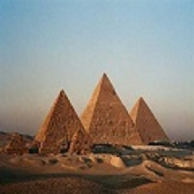
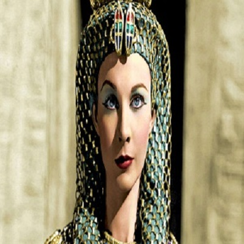
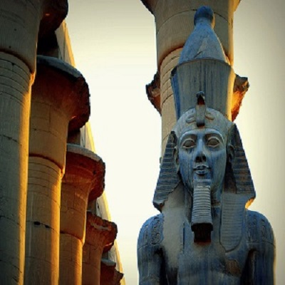

كان أحد فراعنة الأسرة المصرية الثامنة عشر في تاريخ مصر القديم، وكان فرعون مصر من 1334 إلى 1325 ق.م. في عصر الدولة الحديثة. يعتبر توت عنخ أمون من أشهر الفراعنة لأسباب لا تتعلق بانجازات حققها أو حروب انتصر فيها كما هو الحال مع الكثير من الفراعنة؛ وإنما لأسباب أخرى تعتبر مهمة من الناحية التاريخية ومن أبرزها هو اكتشاف مقبرته وكنوزه بالكامل دون أي تلف. واللغز الذي أحاط بظروف وفاته إذ اعتبر الكثير وفاة فرعون في سن مبكرة جدًا أمرًا غير طبيعي وخاصة مع وجود آثار لكسور في عظمي الفخذ والجمجمة، وزواج وزيره من أرملته من بعد وفاته وتنصيب نفسه فرعونًا. كل هذه الأحداث الغامضة، والاستعمال الكثيف لأسطورة لعنة الفراعنة المرتبطة بمقبرة توت عنخ أمون التي استخدمت في الأفلام وألعاب الفيديو جعلت من توت عنخ أمون أشهر الفراعنة لألغاز وأسئلة لا تزال بلا جواب ،

أهرام الجيزة تقع على هضبة الجيزة في محافظة الجيزة على الضفة الغربية لنهر النيل. بنيت قبل حوالي 25 قرنا قبل الميلاد، ما بين 2480 و2550 ق. م وهي تشمل ثلاثة أهرام هي خوفو، خفرع ومنقرع.
والأهرام هي مقابر ملكية كل منها يحمل اسم الملك الذي بناه وتم دفنه فيه، والبناء الهرمي هنا هو مرحلة من مراحل تطور عمارة المقابر في مصر القديمة. فقد بدأت بحفرة صغيرة تحولت إلى حجرة تحت الأرض ثم إلى عدة غرف تعلوها مصطبة. وبعد ذلك تطورت لتأخذ شكل الهرم المدرج على يد المهندس ايمحوتب وزير الفرعون والملك زوسر في الأسرة الثالثة. وتلا ذلك محاولتان للملك سنفرو مؤسس الأسرة الرابعة لبناء شكل هرمي كامل. ولكن ظَهْر الهرمين غير سليمي الشكل. وهما يقعان في دهشور أحدهما مفلطح القاعدة والآخر اتخذ شكلاً أصغر يقارب نصف حجم الأوّل. واستطاع المهندس هميونو مهندس الملك خوفو أن ينجز الشكل الهرميّ المثالى وقام بتشييد هرم خوفو بالجيزة على مساحة 13 فدانًا وتبع ذلك هرما خفرع ومنقرع.

الملكة كليوباترا
الملكة كليوباترا هي أخر ملوك الأسرة المقدونية، التي حكمت مصر منذ وفاة الإسكندر الأكبر في عام 323 قبل الميلاد، وحتى احتلال مصر من قِبَل روما عام 30 قبل الميلاد.
تغطي هذه المقالات مواضيع عن روما القديمة وسقوط الجمهورية:
ماركوس أنطونيوس، كليوباترا، اغتيال يوليوس قيصر، بومبيوس، مسرح بومبيوس، شيشرون، الحكم الثلاثي الأول، منتدى روماني، كوميتيوم، روسترا، كوريا جوليا، كوريا هوستيليا
كانت كليوباترا ابنة بطليموس الثاني عشر المصري . وقد خلفته كملكة سنة 51 ق.م مشاطرة العرش أخاها بطليموس الثالث عشر . وقد وصُفـت بأنها كانت جميلة وساحرة . على نقيض ماتبرزها الصور التي وصلت إلينا . أما الرجال الذين وقعوا في غرامها فقد أسرتهم بشخصيتها القوية الظريفة وبذكائها ودهائها.

رمسيس الثاني
رمسيس الثاني (حوالي 1303 ق.م — يوليو أو أغسطس 1213 ق.م) يُشار إليه أيضًا رمسيس الأكبر، كان فرعون الثالث من حكام الأسرة التاسعة عشر (حكم 1279 – 1213 ق.م).[5][6][7] ينظر إليه على أنه الفرعون الأكثر شهرة والأقوى طوال عهد الإمبراطورية المصرية. سماه خلفائه والحكام اللاحقين له بالجد الأعظم. قاد رمسيس الثاني عدة حملات عسكرية إلى بلاد الشام وأعاد السيطرة المصرية على كنعان. كما قاد كذلك حملات جنوبًا إلى النوبة حيث ذهبا معه أثنين من أبناءه كما لوحظ منقوشًا على جدران معبد بيت الوالي.
نصّب رمسيس وهو في سن الرابعة عشر وليًا للعهد من قبل والده سيتي الأول.[8] يعتقد بأنه جلس على العرش وهو في أواخر سنوات المراهقة وكما ويعرف بأنه حكم مصر في الفترة من 1279 ق.م إلى 1213 ق.م[9] لفترة 67 عاما، وشهرين، وفقا لكلًا من مانيتون والسجلات التاريخية المعاصرة لمصر. وقيل عنه أنه قد عاش 99 عام، ولكن المُرجح أنه توفي في عمر 90 أو 91. فلو أصبح فرعون في 1279 ق.م كما يعتقد معظم علماء المصريات اليوم، لكان قد تولى العرش في عمر 31 1279 ق.م